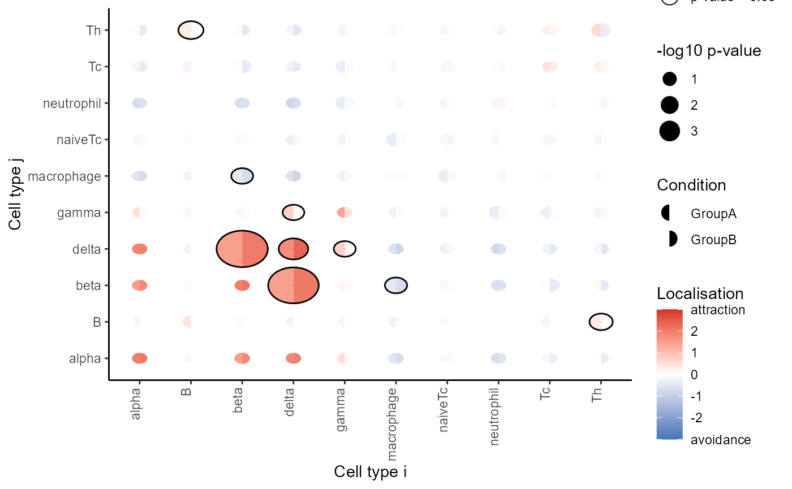

Spatial Mixed-Effects Modelling with spicy
Nicolas Canete
Westmead Institute for Medical Research, University of Sydney, Australianicolas.canete@sydney.edu.au
Ellis Patrick
Westmead Institute for Medical Research, University of Sydney, AustraliaSchool of Mathematics and Statistics, University of Sydney, Australia30 August 2023
Source:vignettes/spicyR.Rmd
spicyR.RmdInstallation
if (!require("BiocManager")) {
install.packages("BiocManager")
}
BiocManager::install("spicyR")Overview
This guide will provide a step-by-step guide on how mixed effects models can be applied to multiple segmented and labelled images to identify how the localisation of different cell types can change across different conditions. Here, the subject is modelled as a random effect, and the different conditions are modelled as a fixed effect.
Example data
Here, we use a subset of the Damond et al 2019 imaging mass cytometry dataset. We will compare the spatial distributions of cells in the pancreatic islets of individuals with early onset diabetes and healthy controls.
diabetesData_SCE is a SingleCellExperiment
object containing single-cell data of 160 images from 8 subjects, with
20 images per subjects.
data("diabetesData_SCE")
diabetesData_SCE
#> class: SingleCellExperiment
#> dim: 0 253777
#> metadata(0):
#> assays(0):
#> rownames: NULL
#> rowData names(0):
#> colnames: NULL
#> colData names(11): imageID cellID ... group stage
#> reducedDimNames(0):
#> mainExpName: NULL
#> altExpNames(0):In this data set, cell types include immune cell types (B cells, naive T cells, T Helper cells, T cytotoxic cells, neutrophils, macrophages) and pancreatic islet cells (alpha, beta, gamma, delta).
Mixed Effects Modelling
To investigate changes in localisation between two different cell types, we measure the level of localisation between two cell types by modelling with the L-function. Specifically, the mean difference between the obtained function and the theoretical function is used as a measure for the level of localisation. Differences of this statistic between two conditions is modelled using a weighted mixed effects model, with condition as the fixed effect and subject as the random effect.
Testing for change in localisation for a specific pair of cells
Firstly, we can test whether one cell type tends to be more localised
with another cell type in one condition compared to the other. This can
be done using the spicy() function, where we include
condition, and subject. In this example, we
want to see whether or not Delta cells (to) tend to be
found around Beta cells (from) in onset diabetes images
compared to non-diabetic images.
spicyTestPair <- spicy(
diabetesData_SCE,
condition = "stage",
subject = "case",
from = "beta",
to = "delta"
)
topPairs(spicyTestPair)
#> intercept coefficient p.value adj.pvalue from to
#> beta__delta 179.729 -58.24478 0.000109702 0.000109702 beta deltaWe obtain a spicy object which details the results of
the mixed effects modelling performed. As the coefficient
in spicyTest is positive, we find that Th cells cells are
more likely to be found near beta cells in the onset diabetes group
compared to the non-diabetic control.
Test for change in localisation for all pairwise cell combinations
Here, we can perform what we did above for all pairwise combinations
of cell types by excluding the from and to
parameters from spicy().
spicyTest <- spicy(
diabetesData_SCE,
condition = "stage",
subject = "case"
)
spicyTest
#> conditionOnset conditionLong-duration
#> 0 15
topPairs(spicyTest)
#> intercept coefficient p.value adj.pvalue
#> beta__delta 1.815458e+02 -48.735693 0.0005033247 0.07169649
#> delta__beta 1.817943e+02 -48.166076 0.0005601288 0.07169649
#> B__unknown 2.885037e-15 11.770938 0.0052338392 0.42051606
#> delta__delta 2.089550e+02 -52.061196 0.0125129422 0.42051606
#> unknown__macrophage 1.007337e+01 -15.826919 0.0207410908 0.42051606
#> unknown__B 5.899351e-15 12.142848 0.0225855404 0.42051606
#> macrophage__unknown 1.004424e+01 -14.471666 0.0244668075 0.42051606
#> B__Th 6.285916e-15 26.847934 0.0245039854 0.42051606
#> otherimmune__naiveTc -9.292508e+00 33.584755 0.0255812944 0.42051606
#> ductal__ductal 1.481580e+01 -8.632569 0.0266935703 0.42051606
#> from to
#> beta__delta beta delta
#> delta__beta delta beta
#> B__unknown B unknown
#> delta__delta delta delta
#> unknown__macrophage unknown macrophage
#> unknown__B unknown B
#> macrophage__unknown macrophage unknown
#> B__Th B Th
#> otherimmune__naiveTc otherimmune naiveTc
#> ductal__ductal ductal ductalAgain, we obtain a spicy object which outlines the
result of the mixed effects models performed for each pairwise
combination if cell types.
We can represent this as a heatmap using the
signifPlot() function by providing it the
spicy object obtained.
signifPlot(
spicyTest,
breaks = c(-3, 3, 1),
marksToPlot = c(
"alpha", "beta", "gamma", "delta",
"B", "naiveTc", "Th", "Tc", "neutrophil", "macrophage"
)
)
sessionInfo()
sessionInfo()
#> R version 4.3.1 (2023-06-16 ucrt)
#> Platform: x86_64-w64-mingw32/x64 (64-bit)
#> Running under: Windows 11 x64 (build 22621)
#>
#> Matrix products: default
#>
#>
#> locale:
#> [1] LC_COLLATE=English_Australia.utf8 LC_CTYPE=English_Australia.utf8
#> [3] LC_MONETARY=English_Australia.utf8 LC_NUMERIC=C
#> [5] LC_TIME=English_Australia.utf8
#>
#> time zone: Australia/Sydney
#> tzcode source: internal
#>
#> attached base packages:
#> [1] stats4 stats graphics grDevices utils datasets methods
#> [8] base
#>
#> other attached packages:
#> [1] SingleCellExperiment_1.22.0 SummarizedExperiment_1.30.2
#> [3] Biobase_2.60.0 GenomicRanges_1.52.0
#> [5] GenomeInfoDb_1.36.2 IRanges_2.34.0
#> [7] S4Vectors_0.38.1 BiocGenerics_0.46.0
#> [9] MatrixGenerics_1.12.3 matrixStats_1.0.0
#> [11] ggplot2_3.4.3 spicyR_1.12.1
#> [13] BiocStyle_2.28.0
#>
#> loaded via a namespace (and not attached):
#> [1] RColorBrewer_1.1-3 rstudioapi_0.15.0
#> [3] jsonlite_1.8.7 MultiAssayExperiment_1.26.0
#> [5] magrittr_2.0.3 spatstat.utils_3.0-3
#> [7] magick_2.7.4 farver_2.1.1
#> [9] nloptr_2.0.3 rmarkdown_2.24
#> [11] fs_1.6.3 zlibbioc_1.46.0
#> [13] ragg_1.2.5 vctrs_0.6.3
#> [15] memoise_2.0.1 minqa_1.2.5
#> [17] spatstat.explore_3.2-1 DelayedMatrixStats_1.22.5
#> [19] RCurl_1.98-1.12 rstatix_0.7.2
#> [21] htmltools_0.5.5 S4Arrays_1.0.4
#> [23] broom_1.0.5 Rhdf5lib_1.22.0
#> [25] rhdf5_2.44.0 sass_0.4.7
#> [27] bslib_0.5.1 desc_1.4.2
#> [29] plyr_1.8.8 cachem_1.0.8
#> [31] lifecycle_1.0.3 pkgconfig_2.0.3
#> [33] Matrix_1.6-0 R6_2.5.1
#> [35] fastmap_1.1.1 GenomeInfoDbData_1.2.10
#> [37] digest_0.6.31 numDeriv_2016.8-1.1
#> [39] colorspace_2.1-0 tensor_1.5
#> [41] rprojroot_2.0.3 dqrng_0.3.0
#> [43] textshaping_0.3.6 ggpubr_0.6.0
#> [45] beachmat_2.16.0 labeling_0.4.2
#> [47] fansi_1.0.4 spatstat.sparse_3.0-2
#> [49] polyclip_1.10-4 abind_1.4-5
#> [51] mgcv_1.8-42 compiler_4.3.1
#> [53] withr_2.5.0 backports_1.4.1
#> [55] BiocParallel_1.34.2 carData_3.0-5
#> [57] highr_0.10 HDF5Array_1.28.1
#> [59] ggforce_0.4.1 R.utils_2.12.2
#> [61] ggsignif_0.6.4 MASS_7.3-60
#> [63] concaveman_1.1.0 DelayedArray_0.26.3
#> [65] rjson_0.2.21 tools_4.3.1
#> [67] goftest_1.2-3 R.oo_1.25.0
#> [69] glue_1.6.2 nlme_3.1-162
#> [71] rhdf5filters_1.12.1 grid_4.3.1
#> [73] ClassifyR_3.4.9 reshape2_1.4.4
#> [75] generics_0.1.3 gtable_0.3.4
#> [77] spatstat.data_3.0-1 R.methodsS3_1.8.2
#> [79] tidyr_1.3.0 data.table_1.14.8
#> [81] car_3.1-2 utf8_1.2.3
#> [83] XVector_0.40.0 spatstat.geom_3.2-1
#> [85] pillar_1.9.0 stringr_1.5.0
#> [87] limma_3.56.2 splines_4.3.1
#> [89] dplyr_1.1.2 tweenr_2.0.2
#> [91] lattice_0.21-8 deldir_1.0-9
#> [93] survival_3.5-5 tidyselect_1.2.0
#> [95] locfit_1.5-9.8 scuttle_1.10.1
#> [97] knitr_1.43 bookdown_0.35
#> [99] edgeR_3.42.4 xfun_0.39
#> [101] DropletUtils_1.20.0 pheatmap_1.0.12
#> [103] scam_1.2-14 stringi_1.7.12
#> [105] yaml_2.3.7 boot_1.3-28.1
#> [107] evaluate_0.21 codetools_0.2-19
#> [109] tibble_3.2.1 BiocManager_1.30.22
#> [111] cli_3.6.1 systemfonts_1.0.4
#> [113] munsell_0.5.0 jquerylib_0.1.4
#> [115] Rcpp_1.0.10 spatstat.random_3.1-5
#> [117] parallel_4.3.1 pkgdown_2.0.7
#> [119] sparseMatrixStats_1.12.0 bitops_1.0-7
#> [121] lme4_1.1-34 SpatialExperiment_1.10.0
#> [123] lmerTest_3.1-3 scales_1.2.1
#> [125] purrr_1.0.2 crayon_1.5.2
#> [127] rlang_1.1.1